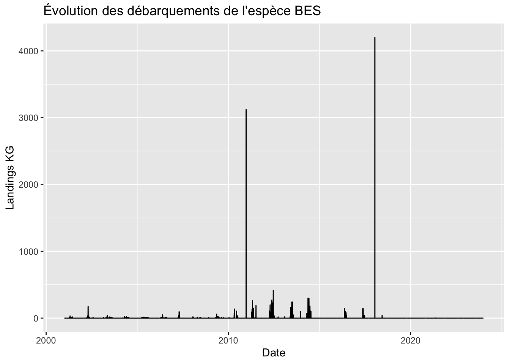
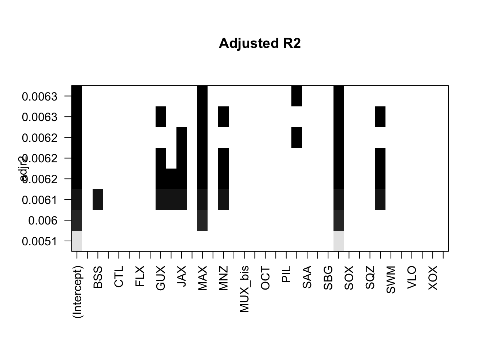
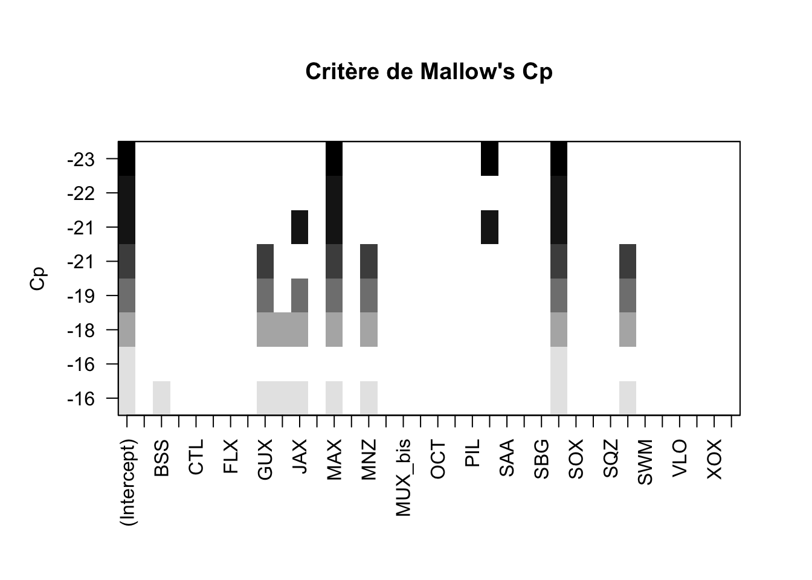
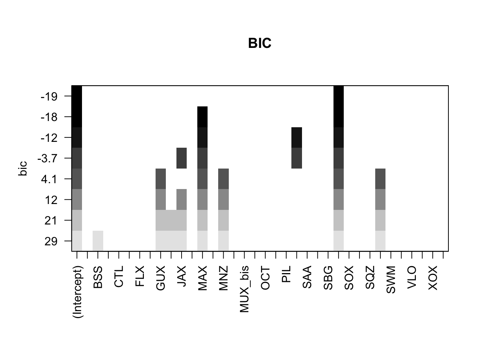
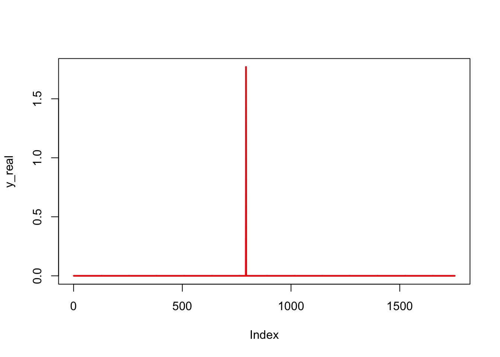

library(dplyr)
library(lubridate)
library(xts)
library(tsoutliers)
library(parallel)
library(doParallel)
library(seastests)
library(tseries)
library(leaps)
library(gets)
library(lmtest)
library(stats)
library(FinTS)
library(ggplot2)forecasting
Let’s clean the data:
df<- read.csv("Data/sacrois_complete.csv")
print(unique(df$X3A_CODE)) [1] "ANE" "BES" "BOG" "BSS" "BZX" "CTL" "DCP"
[8] "DEX" "DPS" "ELX" "FIN" "FLX" "FOX" "GUX"
[15] "HKE" "JAX" "JLX" "JOD" "MAX" "MGR" "MNZ"
[22] "MUL" "MUX_bis" "NEP" "OCT" "PAC" "PEN" "PIL"
[29] "POD" "SAA" "SBA" "SBG" "SBX" "SOX" "SQY"
[36] "SQZ" "SRX" "SWM" "TUX" "VLO" "WEX" "WHB"
[43] "XOX" "ZZZ" print(length(unique(df$X3A_CODE))) # 44 species[1] 44df$DATE_SEQ <- as.Date(df$DATE_SEQ)
str(df)'data.frame': 517404 obs. of 4 variables:
$ DATE_SEQ : Date, format: "1999-12-27" "1999-12-27" ...
$ X3A_CODE : chr "ANE" "BES" "BOG" "BSS" ...
$ QUANT_POIDS_VIF_MOYENNE: num 0 0 0 2636 0 ...
$ MONTANT_EUROS_MOYENNE : num 0 0 0 15979 0 ...df <- df %>%
rename("Date" = "DATE_SEQ") %>%
rename("Species" = "X3A_CODE") %>%
rename("LandingsKG" = "QUANT_POIDS_VIF_MOYENNE") %>%
rename("LandingsEUR" = "MONTANT_EUROS_MOYENNE")%>%
filter(Date >= "2001-01-01" & Date < "2024-01-01")We are getting rid of the late 1999 data and beginning of 2024 data.
df_bes <- df[df$Species == "BES", ]
# Vérifier la structure des données pour s'assurer que 'Date' est bien de type Date
str(df_bes)'data.frame': 8400 obs. of 4 variables:
$ Date : Date, format: "2001-01-01" "2001-01-02" ...
$ Species : chr "BES" "BES" "BES" "BES" ...
$ LandingsKG : num 0 0 0 0 0 0 0 0 0 0 ...
$ LandingsEUR: num 0 0 0 0 0 0 0 0 0 0 ...# Création du graphique avec ggplot2
ggplot(df_bes, aes(x = Date, y = LandingsKG)) +
geom_line() +
labs(x = "Date", y = "Landings KG", title = "Évolution des débarquements de l'espèce BES")
summary(df[df$Species == "BES", ]) Date Species LandingsKG LandingsEUR
Min. :2001-01-01 Length:8400 Min. : 0.000 Min. : 0.000
1st Qu.:2006-10-01 Class :character 1st Qu.: 0.000 1st Qu.: 0.000
Median :2012-07-01 Mode :character Median : 0.000 Median : 0.000
Mean :2012-07-01 Mean : 2.587 Mean : 4.184
3rd Qu.:2018-04-01 3rd Qu.: 0.000 3rd Qu.: 0.000
Max. :2023-12-31 Max. :4200.000 Max. :7932.810 1 Create time series for each species
We will create a ts_list() , a list of lists, that contains the time-series of each species of the data set. The frequency is 365 because we are dealing with daily data.
Also, because for each
# Get the list of unique species
species_list <- unique(df$Species)
# Define the exact date range we want
start_date <- as.Date("2000-01-01")
end_date <- as.Date("2023-12-31")
# Create a complete date sequence
date_seq <- seq(start_date, end_date, by = "day")
# Create a time series for each species
ts_list <- list()
for (species in species_list) {
# Filter data for the current species and aggregate by date
species_data <- df %>%
filter(Species == species) %>%
group_by(Date) %>%
summarize(LandingsKG = sum(LandingsKG, na.rm = TRUE)) %>%
ungroup()
# Create a data frame with all dates
full_data <- data.frame(Date = date_seq)
# Merge with the species data
full_data <- left_join(full_data, species_data, by = "Date")
# Fill NA values with 0
full_data$LandingsKG[is.na(full_data$LandingsKG)] <- 0
# Create a ts object
ts_object <- ts(full_data$LandingsKG,
start = c(2000, 1),
frequency = 365)
# Add the ts object to the list
ts_list[[paste0("ts_", species)]] <- ts_object
}
# Create a vector with all the TS names
ts_names <- names(ts_list)
# Print the names of the time series
print(ts_names) [1] "ts_ANE" "ts_BES" "ts_BOG" "ts_BSS" "ts_BZX"
[6] "ts_CTL" "ts_DCP" "ts_DEX" "ts_DPS" "ts_ELX"
[11] "ts_FIN" "ts_FLX" "ts_FOX" "ts_GUX" "ts_HKE"
[16] "ts_JAX" "ts_JLX" "ts_JOD" "ts_MAX" "ts_MGR"
[21] "ts_MNZ" "ts_MUL" "ts_MUX_bis" "ts_NEP" "ts_OCT"
[26] "ts_PAC" "ts_PEN" "ts_PIL" "ts_POD" "ts_SAA"
[31] "ts_SBA" "ts_SBG" "ts_SBX" "ts_SOX" "ts_SQY"
[36] "ts_SQZ" "ts_SRX" "ts_SWM" "ts_TUX" "ts_VLO"
[41] "ts_WEX" "ts_WHB" "ts_XOX" "ts_ZZZ" 2 Seasonality Detection
We want to apply the combined_test on each time series to sea if there is any seasonality. You should note that:
H1 means seasonality (alternative hypothesis)
H0 means NO seasonality (null hypothesis)
if p < 0.05 then H1 : seasonality
seasonal_combined_test <- c()
seasonal_seasdum <- c()
# Loop over each TS
for (ts_name in names(ts_list)) {
ts_data <- ts_list[[ts_name]] # Retrieve data from the time series list
# Apply the combined_test() test to the time series
ct_res <- combined_test(ts_data)
# Check each p-value and display results if at least one valid H1
ct_results <- ct_res$stat
ct_pvals <- ct_res$Pval
if (ct_results == TRUE) {
cat("\n")
cat("\n")
print(paste0("Combined_test results for the series ", ts_name))
print(ct_res)
seasonal_combined_test <- c(seasonal_combined_test, ts_name)
}
# # Apply the seasdum() test to the time series
# sd_res <- seasdum(ts_data)
#
# # Check p-value and display results if < 0.05
# if (sd_res$Pval < 0.05) {
# cat("\n")
# cat("\n")
# print(paste0("Résultats du seasdum pour la série ", ts_name))
# print(sd_res)
# seasonal_seasdum <- c(seasonal_seasdum, ts_name)
# }
}
[1] "Combined_test results for the series ts_BOG"
Test used: WO
Test statistic: 1
P-value: 0.9506946 0.9630191 1.98604e-08
[1] "Combined_test results for the series ts_BSS"
Test used: WO
Test statistic: 1
P-value: 1 1 0
[1] "Combined_test results for the series ts_BZX"
Test used: WO
Test statistic: 1
P-value: 1 1 9.859313e-05
[1] "Combined_test results for the series ts_CTL"
Test used: WO
Test statistic: 1
P-value: 7.699966e-05 2.308044e-08 0
[1] "Combined_test results for the series ts_FLX"
Test used: WO
Test statistic: 1
P-value: 1 1 6.402466e-09
[1] "Combined_test results for the series ts_HKE"
Test used: WO
Test statistic: 1
P-value: 1 1 3.996884e-07
[1] "Combined_test results for the series ts_JAX"
Test used: WO
Test statistic: 1
P-value: 1 1 4.51619e-05
[1] "Combined_test results for the series ts_MNZ"
Test used: WO
Test statistic: 1
P-value: 1 1 1.821931e-11
[1] "Combined_test results for the series ts_MUL"
Test used: WO
Test statistic: 1
P-value: 1 1 2.19711e-10
[1] "Combined_test results for the series ts_MUX_bis"
Test used: WO
Test statistic: 1
P-value: 1 0.00247086 0.0004175648
[1] "Combined_test results for the series ts_NEP"
Test used: WO
Test statistic: 1
P-value: 0.8851714 0.0552564 2.778844e-10
[1] "Combined_test results for the series ts_SAA"
Test used: WO
Test statistic: 1
P-value: 1 1 1.880718e-13
[1] "Combined_test results for the series ts_SBA"
Test used: WO
Test statistic: 1
P-value: 1 1 2.220446e-16
[1] "Combined_test results for the series ts_SBX"
Test used: WO
Test statistic: 1
P-value: 1 1 6.241518e-05
[1] "Combined_test results for the series ts_SOX"
Test used: WO
Test statistic: 1
P-value: 1 1 1.793225e-07
[1] "Combined_test results for the series ts_SQZ"
Test used: WO
Test statistic: 1
P-value: 1 0.007248347 1.016409e-12
[1] "Combined_test results for the series ts_SRX"
Test used: WO
Test statistic: 1
P-value: 1 1 1.232348e-14
[1] "Combined_test results for the series ts_SWM"
Test used: WO
Test statistic: 1
P-value: 1 1 3.432426e-05
[1] "Combined_test results for the series ts_TUX"
Test used: WO
Test statistic: 1
P-value: 0.0003509172 0.01070668 0
[1] "Combined_test results for the series ts_ZZZ"
Test used: WO
Test statistic: 1
P-value: 1 0.003959824 9.216575e-06assign("seasonal_combined_test", seasonal_combined_test, envir = .GlobalEnv)The combined_test() function combines three tests:
QS test (Quantile Spectral test)
QS-R test (QS test on residuals)
KW-R test (Kruskal-Wallis test on residuals)
The function considers a time series as seasonal if:
The p-value of QS-R is < 0.01 OR the p-value of KW-R is < 0.001
OR if both the p-value of QS is < 0.01 AND the p-value of KW-R is < 0.01
Here are the time series that have Seasonality:
seasonal_combined_test [1] "ts_BOG" "ts_BSS" "ts_BZX" "ts_CTL" "ts_FLX"
[6] "ts_HKE" "ts_JAX" "ts_MNZ" "ts_MUL" "ts_MUX_bis"
[11] "ts_NEP" "ts_SAA" "ts_SBA" "ts_SBX" "ts_SOX"
[16] "ts_SQZ" "ts_SRX" "ts_SWM" "ts_TUX" "ts_ZZZ" We need to correct that seasonality among those time series.
for (ts_name in seasonal_combined_test) {
ts_data <- ts_list[[ts_name]] # Retrieve time series data from the list
decomp <- stl(ts_data, s.window = 365) # STL decomposition
seasonal <- decomp$time.series[, "seasonal"] # Get the seasonal component
ts_data_adjusted <- ts_data - seasonal # Correcting the seasonal component
ts_list[[ts_name]] <- ts_data_adjusted # Update the adjusted time series in the list
}Now that this is done, let’s check again for any seasonality:
seasonal_combined_test <- c()
seasonal_seasdum <- c()
# Loop over each TS
for (ts_name in names(ts_list)) {
ts_data <- ts_list[[ts_name]] # Retrieve data from the time series list
# Apply the combined_test() test to the time series
ct_res <- combined_test(ts_data)
# Check each p-value and display results if at least one valid H1
ct_results <- ct_res$stat
ct_pvals <- ct_res$Pval
if (ct_results == TRUE) {
cat("\n")
cat("\n")
print(paste0("Combined_test results for the series ", ts_name))
print(ct_res)
seasonal_combined_test <- c(seasonal_combined_test, ts_name)
}
}
[1] "Combined_test results for the series ts_BOG"
Test used: WO
Test statistic: 1
P-value: 1 1 0
[1] "Combined_test results for the series ts_BSS"
Test used: WO
Test statistic: 1
P-value: 1 1 0
[1] "Combined_test results for the series ts_BZX"
Test used: WO
Test statistic: 1
P-value: 1 1 0
[1] "Combined_test results for the series ts_CTL"
Test used: WO
Test statistic: 1
P-value: 1 1 0
[1] "Combined_test results for the series ts_FLX"
Test used: WO
Test statistic: 1
P-value: 1 1 0
[1] "Combined_test results for the series ts_HKE"
Test used: WO
Test statistic: 1
P-value: 1 1 0
[1] "Combined_test results for the series ts_JAX"
Test used: WO
Test statistic: 1
P-value: 1 1 0
[1] "Combined_test results for the series ts_MUL"
Test used: WO
Test statistic: 1
P-value: 1 1 0
[1] "Combined_test results for the series ts_MUX_bis"
Test used: WO
Test statistic: 1
P-value: 1 1 0
[1] "Combined_test results for the series ts_NEP"
Test used: WO
Test statistic: 1
P-value: 1 1 1.660894e-13
[1] "Combined_test results for the series ts_SAA"
Test used: WO
Test statistic: 1
P-value: 1 1 0
[1] "Combined_test results for the series ts_SBA"
Test used: WO
Test statistic: 1
P-value: 1 1 0
[1] "Combined_test results for the series ts_SBX"
Test used: WO
Test statistic: 1
P-value: 1 1 0
[1] "Combined_test results for the series ts_SOX"
Test used: WO
Test statistic: 1
P-value: 1 1 0
[1] "Combined_test results for the series ts_SQZ"
Test used: WO
Test statistic: 1
P-value: 1 1 0
[1] "Combined_test results for the series ts_SRX"
Test used: WO
Test statistic: 1
P-value: 1 1 0
[1] "Combined_test results for the series ts_SWM"
Test used: WO
Test statistic: 1
P-value: 1 1 0
[1] "Combined_test results for the series ts_TUX"
Test used: WO
Test statistic: 1
P-value: 1 1 0It’s weird that we have such a difference between the first two tests and the last one. There are quite the opposite, in term of P-values.
For now we will focus on the first two tests (QS & QS-R) tests as our results for seasonality. According to them, there is no seasonality left.
3 Stationarity
Now, let’s take care of stationarity. Most of the forecasting models we are going to use need stationary time-series. We will use the adf.test from the tseries package.
Note that for this test we have:
H0: série non stationnaire (possède une racine unitaire)
H1: série stationnaire (n’en possède pas)
if p<0.05 : the serie is stationary
# First round of differencing
for (ts_name in names(ts_list)) {
ts_data <- ts_list[[ts_name]] # Retrieve time series data from the list
adf_result <- adf.test(ts_data) # Apply ADF test for stationarity
#print(adf_result)
# Check if P-Value > 0.05
if (adf_result$p.value > 0.05) {
# Apply a difference to the time series if it is not stationary
ts_list[[ts_name]] <- diff(ts_data)
print(paste("The TS", ts_name, "has been differentiated"))
}
else {
print(paste("The TS", ts_name, "is stationary"))
}
}[1] "The TS ts_ANE is stationary"
[1] "The TS ts_BES is stationary"
[1] "The TS ts_BOG is stationary"
[1] "The TS ts_BSS is stationary"
[1] "The TS ts_BZX is stationary"
[1] "The TS ts_CTL is stationary"
[1] "The TS ts_DCP is stationary"
[1] "The TS ts_DEX is stationary"
[1] "The TS ts_DPS is stationary"
[1] "The TS ts_ELX is stationary"
[1] "The TS ts_FIN is stationary"
[1] "The TS ts_FLX is stationary"
[1] "The TS ts_FOX is stationary"
[1] "The TS ts_GUX is stationary"
[1] "The TS ts_HKE is stationary"
[1] "The TS ts_JAX is stationary"
[1] "The TS ts_JLX is stationary"
[1] "The TS ts_JOD is stationary"
[1] "The TS ts_MAX is stationary"
[1] "The TS ts_MGR is stationary"
[1] "The TS ts_MNZ is stationary"
[1] "The TS ts_MUL is stationary"
[1] "The TS ts_MUX_bis is stationary"
[1] "The TS ts_NEP is stationary"
[1] "The TS ts_OCT is stationary"
[1] "The TS ts_PAC is stationary"
[1] "The TS ts_PEN is stationary"
[1] "The TS ts_PIL is stationary"
[1] "The TS ts_POD is stationary"
[1] "The TS ts_SAA is stationary"
[1] "The TS ts_SBA is stationary"
[1] "The TS ts_SBG is stationary"
[1] "The TS ts_SBX is stationary"
[1] "The TS ts_SOX is stationary"
[1] "The TS ts_SQY is stationary"
[1] "The TS ts_SQZ is stationary"
[1] "The TS ts_SRX is stationary"
[1] "The TS ts_SWM is stationary"
[1] "The TS ts_TUX is stationary"
[1] "The TS ts_VLO is stationary"
[1] "The TS ts_WEX is stationary"
[1] "The TS ts_WHB is stationary"
[1] "The TS ts_XOX is stationary"
[1] "The TS ts_ZZZ is stationary"# Second round of differencing if necessary
for (ts_name in names(ts_list)) {
ts_data <- ts_list[[ts_name]] # Retrieve time series data from the list
adf_result <- adf.test(ts_data) # Apply ADF test for stationarity
#print(adf_result)
# Check if P-Value > 0.05
if (adf_result$p.value > 0.05) {
print(paste("The TS", ts_name, "is still not stationary"))
# Apply a difference to the time series if it is not stationary
ts_list[[ts_name]] <- diff(ts_data)
print(paste("The TS", ts_name, "has been differentiated a second time"))
}
}
# Final check
for (ts_name in names(ts_list)) {
ts_data <- ts_list[[ts_name]] # Retrieve time series data from the list
adf_result <- adf.test(ts_data) # Apply ADF test for stationarity
#print(adf_result)
if (adf_result$p.value > 0.05) {
# Check if P-Value > 0.05
cat(paste0("\033[1m\033[4m\033[31mThe time series ", ts_name, " is still not stationary:\033[0m\n"))
}
}It seems that every time-series is now stationary. Let’s check if they all have the same length
str(ts_list)List of 44
$ ts_ANE : Time-Series [1:8766] from 2000 to 2024: 0 0 0 0 0 0 0 0 0 0 ...
$ ts_BES : Time-Series [1:8766] from 2000 to 2024: 0 0 0 0 0 0 0 0 0 0 ...
$ ts_BOG : Time-Series [1:8766] from 2000 to 2024: 0.174 0.174 0.174 0.174 0.174 ...
$ ts_BSS : Time-Series [1:8766] from 2000 to 2024: 67.6 101.6 113.1 26.9 22.8 ...
$ ts_BZX : Time-Series [1:8766] from 2000 to 2024: 0.21 0.21 0.21 0.21 0.21 ...
$ ts_CTL : Time-Series [1:8766] from 2000 to 2024: 226.6 234.5 237 122.7 31.8 ...
$ ts_DCP : Time-Series [1:8766] from 2000 to 2024: 0 0 0 0 0 0 0 0 0 0 ...
$ ts_DEX : Time-Series [1:8766] from 2000 to 2024: 0 0 0 0 0 0 0 0 0 0 ...
$ ts_DPS : Time-Series [1:8766] from 2000 to 2024: 0 0 0 0 0 0 0 0 0 0 ...
$ ts_ELX : Time-Series [1:8766] from 2000 to 2024: 0 0 0 0 0 0 0 0 0 0 ...
$ ts_FIN : Time-Series [1:8766] from 2000 to 2024: 0 0 0 0 0 0 0 0 0 0 ...
$ ts_FLX : Time-Series [1:8766] from 2000 to 2024: 18.6 19.2 24 -24.3 -60.6 ...
$ ts_FOX : Time-Series [1:8766] from 2000 to 2024: 0 0 0 0 0 0 0 0 0 0 ...
$ ts_GUX : Time-Series [1:8766] from 2000 to 2024: 0 0 0 0 0 0 0 0 0 0 ...
$ ts_HKE : Time-Series [1:8766] from 2000 to 2024: 121 122 120 117 99 ...
$ ts_JAX : Time-Series [1:8766] from 2000 to 2024: 86.1 86.1 86.1 86.1 86.1 ...
$ ts_JLX : Time-Series [1:8766] from 2000 to 2024: 0 0 0 0 0 0 0 0 0 0 ...
$ ts_JOD : Time-Series [1:8766] from 2000 to 2024: 0 0 0 0 0 0 0 0 0 0 ...
$ ts_MAX : Time-Series [1:8766] from 2000 to 2024: 0 0 0 0 0 0 0 0 0 0 ...
$ ts_MGR : Time-Series [1:8766] from 2000 to 2024: 0 0 0 0 0 0 0 0 0 0 ...
$ ts_MNZ : Time-Series [1:8766] from 2000 to 2024: 307 312 301 289 230 ...
$ ts_MUL : Time-Series [1:8766] from 2000 to 2024: 4.93 16.15 13.6 15.54 15.81 ...
$ ts_MUX_bis: Time-Series [1:8766] from 2000 to 2024: 11.07 35.32 44.02 -8.04 -17.73 ...
$ ts_NEP : Time-Series [1:8766] from 2000 to 2024: 137 146 138 140 132 ...
$ ts_OCT : Time-Series [1:8766] from 2000 to 2024: 0 0 0 0 0 0 0 0 0 0 ...
$ ts_PAC : Time-Series [1:8766] from 2000 to 2024: 0 0 0 0 0 0 0 0 0 0 ...
$ ts_PEN : Time-Series [1:8766] from 2000 to 2024: 0 0 0 0 0 0 0 0 0 0 ...
$ ts_PIL : Time-Series [1:8766] from 2000 to 2024: 0 0 0 0 0 0 0 0 0 0 ...
$ ts_POD : Time-Series [1:8766] from 2000 to 2024: 0 0 0 0 0 0 0 0 0 0 ...
$ ts_SAA : Time-Series [1:8766] from 2000 to 2024: 0.000466 0.000465 0.000465 0.000464 0.000464 ...
$ ts_SBA : Time-Series [1:8766] from 2000 to 2024: 0.0566 0.0566 0.0566 0.0566 0.0566 ...
$ ts_SBG : Time-Series [1:8766] from 2000 to 2024: 0 0 0 0 0 0 0 0 0 0 ...
$ ts_SBX : Time-Series [1:8766] from 2000 to 2024: 207 -1039 211 205 197 ...
$ ts_SOX : Time-Series [1:8766] from 2000 to 2024: 42.7 42.4 40.4 30.1 14.9 ...
$ ts_SQY : Time-Series [1:8766] from 2000 to 2024: 0 0 0 0 0 0 0 0 0 0 ...
$ ts_SQZ : Time-Series [1:8766] from 2000 to 2024: 85.5 96.3 99.7 38.9 -62.4 ...
$ ts_SRX : Time-Series [1:8766] from 2000 to 2024: 123.23 137.91 99.64 40.25 7.19 ...
$ ts_SWM : Time-Series [1:8766] from 2000 to 2024: 2.23 2.23 2.23 2.24 2.24 ...
$ ts_TUX : Time-Series [1:8766] from 2000 to 2024: 164 164 164 163 163 ...
$ ts_VLO : Time-Series [1:8766] from 2000 to 2024: 0 0 0 0 0 0 0 0 0 0 ...
$ ts_WEX : Time-Series [1:8766] from 2000 to 2024: 0 0 0 0 0 0 0 0 0 0 ...
$ ts_WHB : Time-Series [1:8766] from 2000 to 2024: 0 0 0 0 0 0 0 0 0 0 ...
$ ts_XOX : Time-Series [1:8766] from 2000 to 2024: 0 0 0 0 0 0 0 0 0 0 ...
$ ts_ZZZ : Time-Series [1:8766] from 2000 to 2024: 760 833 991 862 947 ...They do.
Now, before forecasting we are going to use a variables selection method. This will help us to reduce the number of irrelevant variables of our models.
After that, we will apply econometrics and machine learning forecasting models.
From now on, we’ll reason as follows:
\(Y_t\): will be the variable we seek to predict
\(X_k,_t\): will be the explanatory variables, which will add information to enable the models to better predict our \(Y_t\).
For your information, here’s a table summarizing our variables. In bold are the dynamic variables in Ifremer’s IAM forecasting model. As these variables are already considered dynamic, they are the only ones we won’t attempt to predict.
| HKE | European hake | MUT | Red mullet |
|---|---|---|---|
| NEP | Norway lobster | ARA | Red shrimp |
| DPS | Deep-water rose shrimp | ANE | European anchovy |
| BES | Belone | BOG | Bogue |
| BSS | European seabass | BZX | Bonitos |
| CTL | Cuttlefish, bobtail squids | DCP | Natantian decapods |
| DEX | Dentex | DPS | Deep-water rose shrimp |
| ELX | River eels | FIN | Finfishes |
| FLX | Flatfishes | FOX | Forkbeards |
| GUX | Gurnards, searobins | JAX | Jack and horse mackerels |
| JLX | Murex shells | JOD | John dory |
| MAX | Mackerels | MGR | Meagre |
| MNZ | Monkfishes | MUL | Mullets |
| MUX_bis | Red mullets | OCT | Octopuses, etc. |
| PAC | Common pandora | PEN | Penaeus shrimps |
| PIL | European pilchard | POD | Poor cod |
| SAA | Round sardinella | SBA | Axillary seabream |
| SBG | Gilthead seabream | SBX | Porgies, seabreams |
| SOX | Soles | SQY | Squillids |
| SQZ | Inshore squids | SRX | Rays, stingrays, mantas |
| SWM | Swimming crabs, etc. | TUX | Tuna-like fishes |
| VLO | Spiny lobsters | WEX | Weevers |
| WHB | Blue whiting | XOX | Sandlances |
Note: ZZZ therefore includes all species not mentioned in the table above. It is therefore a collection of several species.
First, let’s create a single dataframe:
# Starting from 1st January 2001 until total number of values : 8766
dates <- seq(as.Date("2000-01-01"), by = "day", length.out = 8766)
# Empty data frame
df <- data.frame(Date = dates)
for (nom in names(ts_list)) {
# Extract species names and delete "ts_"
nom_espece <- sub("^ts_", "", nom)
# Add to a new column
df[[nom_espece]] <- as.vector(ts_list[[nom]])
}
write.csv(df, "Data/data_clean.csv", row.names = FALSE)
str(df)'data.frame': 8766 obs. of 45 variables:
$ Date : Date, format: "2000-01-01" "2000-01-02" ...
$ ANE : num 0 0 0 0 0 0 0 0 0 0 ...
$ BES : num 0 0 0 0 0 0 0 0 0 0 ...
$ BOG : num 0.174 0.174 0.174 0.174 0.174 ...
$ BSS : num 67.6 101.6 113.1 26.9 22.8 ...
$ BZX : num 0.21 0.21 0.21 0.21 0.21 ...
$ CTL : num 226.6 234.5 237 122.7 31.8 ...
$ DCP : num 0 0 0 0 0 0 0 0 0 0 ...
$ DEX : num 0 0 0 0 0 0 0 0 0 0 ...
$ DPS : num 0 0 0 0 0 0 0 0 0 0 ...
$ ELX : num 0 0 0 0 0 0 0 0 0 0 ...
$ FIN : num 0 0 0 0 0 0 0 0 0 0 ...
$ FLX : num 18.6 19.2 24 -24.3 -60.6 ...
$ FOX : num 0 0 0 0 0 0 0 0 0 0 ...
$ GUX : num 0 0 0 0 0 0 0 0 0 0 ...
$ HKE : num 121 122 120 117 99 ...
$ JAX : num 86.1 86.1 86.1 86.1 86.1 ...
$ JLX : num 0 0 0 0 0 0 0 0 0 0 ...
$ JOD : num 0 0 0 0 0 0 0 0 0 0 ...
$ MAX : num 0 0 0 0 0 0 0 0 0 0 ...
$ MGR : num 0 0 0 0 0 0 0 0 0 0 ...
$ MNZ : num 307 312 301 289 230 ...
$ MUL : num 4.93 16.15 13.6 15.54 15.81 ...
$ MUX_bis: num 11.07 35.32 44.02 -8.04 -17.73 ...
$ NEP : num 137 146 138 140 132 ...
$ OCT : num 0 0 0 0 0 0 0 0 0 0 ...
$ PAC : num 0 0 0 0 0 0 0 0 0 0 ...
$ PEN : num 0 0 0 0 0 0 0 0 0 0 ...
$ PIL : num 0 0 0 0 0 0 0 0 0 0 ...
$ POD : num 0 0 0 0 0 0 0 0 0 0 ...
$ SAA : num 0.000466 0.000465 0.000465 0.000464 0.000464 ...
$ SBA : num 0.0566 0.0566 0.0566 0.0566 0.0566 ...
$ SBG : num 0 0 0 0 0 0 0 0 0 0 ...
$ SBX : num 207 -1039 211 205 197 ...
$ SOX : num 42.7 42.4 40.4 30.1 14.9 ...
$ SQY : num 0 0 0 0 0 0 0 0 0 0 ...
$ SQZ : num 85.5 96.3 99.7 38.9 -62.4 ...
$ SRX : num 123.23 137.91 99.64 40.25 7.19 ...
$ SWM : num 2.23 2.23 2.23 2.24 2.24 ...
$ TUX : num 164 164 164 163 163 ...
$ VLO : num 0 0 0 0 0 0 0 0 0 0 ...
$ WEX : num 0 0 0 0 0 0 0 0 0 0 ...
$ WHB : num 0 0 0 0 0 0 0 0 0 0 ...
$ XOX : num 0 0 0 0 0 0 0 0 0 0 ...
$ ZZZ : num 760 833 991 862 947 ...For the forecasting models we are going to use 80% of the df as training and the last 20% as testing base. The idea behind this is to train the models on the training base and compare their results with the “reality” (meaning the testing base). This will allow us to compute some performance indicators and compare the models.
4 Cleaning Variables
But first, there is one problem. Some species have long period with no data at all, meaning only 0’s. We have to get rid of the species that have either:
only 0’s on the training base
only 0’s on the testing base
The forecasting models can’t perform with either a training or testing base full of 0’s.
df <- read.csv("Data/data_clean.csv")n <- nrow(df)
train_size <- round(0.8 * n)
print(train_size)[1] 7013train <- df[1:train_size, 2:ncol(df)] # Get rid of "Date"
constant_columns <- sapply(train, function(col) length(unique(col)) == 1)
constant_column_names <- names(constant_columns)[constant_columns]
constant_column_names[1] "DCP"We have to get rid of DCP because it’s constant
n <- nrow(df)
test_size <- round(0.2 * n)
print(test_size)[1] 1753test <- df[(train_size+1):n, 2:ncol(df)] # Get rid of "Date"
constant_columns <- sapply(test, function(col) length(unique(col)) == 1)
constant_column_names <- names(constant_columns)[constant_columns]
constant_column_names[1] "ANE" "DEX" "DPS" "FIN" "JLX" "PEN" "WEX" "WHB"We have to get rid of ANE, DEX, DPS, FIN, JLX, PEN, WEX, WHB because it’s constant
df <- df %>%
select(-c("ANE", "DCP", "DEX", "DPS", "FIN", "JLX", "PEN", "WHB"))
names(df) [1] "Date" "BES" "BOG" "BSS" "BZX" "CTL" "ELX"
[8] "FLX" "FOX" "GUX" "HKE" "JAX" "JOD" "MAX"
[15] "MGR" "MNZ" "MUL" "MUX_bis" "NEP" "OCT" "PAC"
[22] "PIL" "POD" "SAA" "SBA" "SBG" "SBX" "SOX"
[29] "SQY" "SQZ" "SRX" "SWM" "TUX" "VLO" "WEX"
[36] "XOX" "ZZZ" So now let’s re do the training and testing bases
train <- df[1:train_size, 2:ncol(df)] # Get rid of "Date"
test <- df[(train_size+1):n, 2:ncol(df)] # Get rid of "Date"5 Forecasting: BES
Let’s start the variable selection process with BES as our \(Y_t\)
5.1 Variable selections
The variable selection process if composed of two methods, the get and the BestSubSet.
We will try to take both of them into account.
5.1.1 BestSubSet Method
leaps <- regsubsets(BES ~ .,data= train, nbest=1, method=c("exhaustive"))
leapsSubset selection object
Call: regsubsets.formula(BES ~ ., data = train, nbest = 1, method = c("exhaustive"))
35 Variables (and intercept)
Forced in Forced out
BOG FALSE FALSE
BSS FALSE FALSE
BZX FALSE FALSE
CTL FALSE FALSE
ELX FALSE FALSE
FLX FALSE FALSE
FOX FALSE FALSE
GUX FALSE FALSE
HKE FALSE FALSE
JAX FALSE FALSE
JOD FALSE FALSE
MAX FALSE FALSE
MGR FALSE FALSE
MNZ FALSE FALSE
MUL FALSE FALSE
MUX_bis FALSE FALSE
NEP FALSE FALSE
OCT FALSE FALSE
PAC FALSE FALSE
PIL FALSE FALSE
POD FALSE FALSE
SAA FALSE FALSE
SBA FALSE FALSE
SBG FALSE FALSE
SBX FALSE FALSE
SOX FALSE FALSE
SQY FALSE FALSE
SQZ FALSE FALSE
SRX FALSE FALSE
SWM FALSE FALSE
TUX FALSE FALSE
VLO FALSE FALSE
WEX FALSE FALSE
XOX FALSE FALSE
ZZZ FALSE FALSE
1 subsets of each size up to 8
Selection Algorithm: exhaustiveres.sum <- summary(leaps)
data.frame(Adj.R2=which.max(res.sum$adjr2),
CP=which.min(res.sum$cp),
BIC=which.min(res.sum$bic)) Adj.R2 CP BIC
1 3 3 1# plot a table of models showing variables in each model
plot(leaps,scale="adjr2",main="Adjusted R2")
plot(leaps,scale="Cp",main="Critère de Mallow's Cp")
plot(leaps, scale = "bic", main = "BIC")
2 out 3 criterias are proposing the same 3 variables which are:MAX, POD, SBX
The last criteria (BIC) is proposing only one variable: SBX
5.1.2 Gets Method
mX <- data.matrix(train[, !names(train) %in% c("BES")])
y <- train$BES
# ARX Initial
modele_arx <- arx(y, mc = TRUE, ar = 1, mxreg = mX, vcov.type = "ordinary")
seuil_p_value <- 0.05
variables <- colnames(mX)
VRAI <- TRUE
while (VRAI) {
modele_arx <- arx(y, ar = 1, mxreg = mX, vcov.type = "ordinary")
p_values <- modele_arx[["mean.results"]][["p-value"]][-c(1, 2)] # Exclure la constante et AR(1)
max_p_value <- max(p_values)
if (max_p_value > seuil_p_value) {
variable_a_supprimer <- variables[which.max(p_values)]
variables <- setdiff(variables, variable_a_supprimer)
mX <- mX[, variables, drop = FALSE]
} else {
VRAI <- FALSE
}
}
arx_final <- arx(y, ar = 1, mxreg = mX, vcov.type = "ordinary")
modele_gets <- getsm(arx_final)
GUM mean equation:
reg.no. keep coef std.error t-stat p-value
mconst 1 0 1.26364934 0.82230882 1.5367 0.124410
ar1 2 0 0.01454016 0.01191907 1.2199 0.222541
MAX 3 0 0.00172000 0.00064602 2.6625 0.007775 **
SBX 4 0 0.00413249 0.00069898 5.9122 3.535e-09 ***
---
Signif. codes: 0 '***' 0.001 '**' 0.01 '*' 0.05 '.' 0.1 ' ' 1
Diagnostics:
Chi-sq df p-value
Ljung-Box AR(2) 5.2752e-01 2 0.76816
Ljung-Box ARCH(1) 1.6916e-06 1 0.99896
Path 1: 1 2
Path 2: 2 1
Terminal models:
info(sc) logl n k
spec 1 (1-cut): 11.1627 -39127.57 7012 2
Retained regressors (final model):
MAX SBX str(mX) num [1:7013, 1:2] 0 0 0 0 0 0 0 0 0 0 ...
- attr(*, "dimnames")=List of 2
..$ : chr [1:7013] "1" "2" "3" "4" ...
..$ : chr [1:2] "MAX" "SBX"According to the results we should have 2 variables in our models: MAX, SBX
So we have three choices:
MAX, POD, SBXMAX, SBXSBX
Let’s try with MAX, SBX
train2 <- train %>%
select("BES","MAX", "SBX")
test2 <- test %>%
select("BES","MAX", "SBX")5.2 ARX with Get
set.seed(123)
n <- nrow(df)
train_size <- round(0.8 * n)
train_data <- df[1:train_size, 2:ncol(train2)]
test_data <- df[(train_size+1):n, 2:ncol(test2)]
y_real <- test_data$BES
mX_train <- data.matrix(train_data)
mX_test <- data.matrix(test_data)
y_train <- train_data$BES
y_test <- test_data$BES
model <- arx(y_train, mc = TRUE, ar = 1, mxreg = mX_train, vcov.type = "ordinary")
n_test <- nrow(test_data)
p_arxget <- predict(model, n.ahead = n_test, newmxreg = mX_test)
p_arxget <- as.numeric(p_arxget)
# Plot
plot(y_real, type = "l", col = "black", lwd = 2, ylim = range(c(y_real)))
lines(p_arxget, col = "red", lwd = 2)
rmse <- sqrt(mean((y_real - p_arxget)^2, na.rm = TRUE))
print(paste("RMSE :", rmse)) [1] "RMSE : 9.95125183661047e-14"